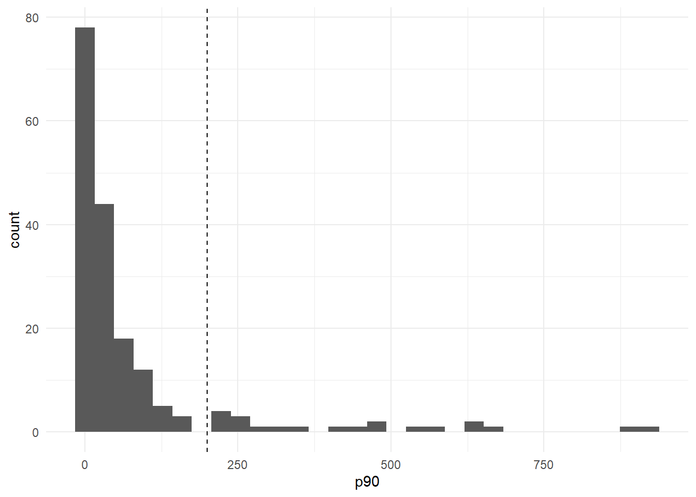

Konu 16 Sayma Verilerini Modelleme
16.1 Poisson Regresyon
Bir ailenin bir yılda çıktığı tatil sayısı,
Bir firmanın bir yılda aldığı patent sayısı,
Bir yılda doktora ya da dişçiye gitme sayısı,
Bir haftada manava gitme sayısı,
Bir yılda alınan park cezası ya da hız cezası sayısı,
Belirli bir zaman diliminde hastanede kalınan gün sayısı,
Beş dakikalık bir zaman diliminde paralı yol gişesinden geçen araç sayısı,
Bir yılda sinema, tiyatro ya da operaya gitme sayısı …
Bunun gibi örneklerde bağımlı değişken sayma türündendir. Söz konusu değişkenlerin değeri kesikli ve sonlu sayıdadır. Aynı zamanda aşağıdaki gibi nadir olaylara ilişkin örnekleri de verebiliriz:
Bir haftalık sürede yıldırım çarpmasına uğramak,
iki hafta içinde birden çok loto kazanmak,
Dört hafta içinde iki ya da daha çok kalp krizi geçirmek,
Bir gün içerisinde en az bir trafik kazası geçirmek …
Sayma verisine özellikle uyan olasılık dağılımı poisson olasılık dağılımıdır.
Poisson dağılımın olasılık yoğunluk fonksiyonu:
\(f(y_i) = \frac{(\mu^ye^{-\mu})}{y!}\)
y = 0, 1, 2, …
f(y), y değişkeninin negatif olmayan tamsayılı değerler alma olasılığıdır.
y! = y * (y-1) * (y-2) * 2 * 1
Poisson dağılımda varyans ortalama ile aynı değere sahiptir (eşit yayılım). Yani;
e(y) = \(\mu\)
var(y) = \(\mu\)
Poisson regresyon modeli şöyle yazılabilir:
\(y_i = e(y_i) + \epsilon_i = \mu_i + \epsilon_i\)
y’ler birbirinden bağımsız dağılmış ve ortalaması \(\mu_i\) olan poisson rassal değişkenlerdir. Şöyle gösterebiliriz:
\(\mu_i = e(y_i) = exp(\beta_1 + \beta_2x_{2i} + ... + \beta_kx_{ki})\) ; exp: doğal logaritma tabanı e’nin () içindeki ifade kadar üssüdür.
Burada x’ler ortalama değeri etkileyebilecek bazı değişkenlerdir. Örneğin, sayma değişkenimiz bir kimsenin Babylon’daki etkinliklere bir yılda katılma sayısı olsun. Bu sayı gelire, ücrete, konum olarak uzaklığa ve otopark parasına bağlı olabilir.
Tahmin amacıyla modeli şöyle yazalım:
\(f(y_i) = \frac{(\mu^ye^{-\mu})}{y!} + \epsilon_i\)
library(readxl);library(tidyverse);library(magrittr);library(moments);library(MASS)
setwd("C:/Users/datanerd/Desktop/Github/rEkonometri/data")
df <- read_excel("Table12_1.xls")1990 yılı için 181 uluslararası imalatçı firmadan oluşan veri seti patentler ve Ar-Ge harcamaları olacak.
Amacımız Ar-Ge, endüstri kategorisi ve iki ülkenin, 181 firmanın almış olduğu ortalama patent sayısına etkisini belirlemektir.
Öncelikle patentlerin, Ar-Ge logaritması (lr90 sütunu), beş endüstri (aerosp, chemist, computer, machines, vehicles) kuklası ve iki ülke (Japan, US) kuklasına göre regresyonunu alarak doğrusal bir regresyon modeli kurmak olacak. Bunu karşılaştırma amacıyla yapacağız.
## tibble [181 x 11] (S3: tbl_df/tbl/data.frame)
## $ p91 : num [1:181] 55 67 55 83 0 4 7 0 0 96 ...
## $ p90 : num [1:181] 80 46 42 102 1 11 55 0 1 67 ...
## $ lr91 : num [1:181] 6.29 5.15 4.17 6.13 4.87 ...
## $ lr90 : num [1:181] 6.16 5.14 4.1 6.15 4.82 ...
## $ aerosp : num [1:181] 0 0 0 0 0 0 1 0 0 0 ...
## $ chemist : num [1:181] 0 0 1 1 0 0 0 0 0 1 ...
## $ computer: num [1:181] 0 0 0 0 0 0 0 0 1 0 ...
## $ machines: num [1:181] 0 0 0 0 0 0 0 0 0 0 ...
## $ vehicles: num [1:181] 0 0 0 0 0 0 0 0 0 0 ...
## $ japan : num [1:181] 0 0 0 0 0 0 0 0 0 0 ...
## $ us : num [1:181] 1 1 1 0 0 0 1 1 1 1 ...lmodel <- lm(formula = p90 ~ lr90 + aerosp + chemist + computer + machines + vehicles + japan + us, data = df)
summary(lmodel)##
## Call:
## lm(formula = p90 ~ lr90 + aerosp + chemist + computer + machines +
## vehicles + japan + us, data = df)
##
## Residuals:
## Min 1Q Median 3Q Max
## -339.29 -52.05 -4.73 37.48 585.04
##
## Coefficients:
## Estimate Std. Error t value Pr(>|t|)
## (Intercept) -250.839 55.435 -4.525 1.12e-05 ***
## lr90 73.172 7.971 9.180 < 2e-16 ***
## aerosp -44.162 35.645 -1.239 0.21706
## chemist 47.081 26.542 1.774 0.07786 .
## computer 33.856 27.769 1.219 0.22444
## machines 34.379 27.813 1.236 0.21811
## vehicles -191.790 36.704 -5.225 4.98e-07 ***
## japan 26.239 40.920 0.641 0.52223
## us -76.854 28.649 -2.683 0.00802 **
## ---
## Signif. codes: 0 '***' 0.001 '**' 0.01 '*' 0.05 '.' 0.1 ' ' 1
##
## Residual standard error: 114.5 on 172 degrees of freedom
## Multiple R-squared: 0.4729, Adjusted R-squared: 0.4484
## F-statistic: 19.29 on 8 and 172 DF, p-value: < 2.2e-16Ar-Ge harcamaları (lr90) ile patent sayısı (p90) arasında istatistiksel olarak oldukça anlamlı pozitif bir ilişki bulunmaktadır. Ar-Ge değişkeni logaritmik; patent değişkeni ise doğrusal yapıdadır.
Diğer değişkenler sabit tutulduğunda;
Ar-Ge harcamalarındaki %1’lik artış ortalama patent sayısını 0.73 kadar artırır.
Endüstrilerde ise chemist ve vehicles anlamlıdır. Parametrelerine baktığımızda chemist’te verilen ortalama patent miktarı 47 patent daha fazladır; vehicles’da verilen ortalama patent miktarı 192 patent daha düşüktür.
Ülkelere göre baktığımızda sadece us anlamlıdır. Burada, us firmalarının baz gruba göre ortalamada 77 daha az patent almış olduğunu söyleyebiliriz.
Bu modeli karşılaştırma amaçlı kurduğumuzu söylemiştik. ve bu modelin uygun olmadığını göstermiş olduk. Çünkü bazı firmalar büyük sayıda patentler almış olsalar da firma başına bir yılda alınan patent sayısı genellikle düşüktür. Bunu görselleştirelim.
df %>%
ggplot(aes(x = p90)) +
geom_histogram() +
geom_vline(xintercept = 200, linetype="dashed") +
theme_minimal()
Firmaların büyük bir çoğunluğunun 200’den daha az patent aldığını görselden net bir şekilde görebiliyoruz. Bu durumu tablo şeklinde de gösterebiliriz.
df %>%
mutate(patentler = ifelse(p90 %in% 0:199, "[0-200)",
ifelse(p90 %in% 200:399, "[200-400)",
ifelse(p90 %in% 400:599, "[400-600)",
ifelse(p90 %in% 600:799, "[600-800)",
ifelse(p90 %in% 800:999, "[800-1000)", "")))))) %>%
group_by(patentler) %>%
summarise("sayı" = n()) %>%
mutate("yüzde" = `sayı` / sum(`sayı`) * 100) %>%
mutate("kümülatif sayı" = cumsum(`sayı`),
"kümülatif yüzde" = cumsum(`yüzde`))## # A tibble: 5 x 5
## patentler sayı yüzde `kümülatif sayı` `kümülatif yüzde`
## <chr> <int> <dbl> <int> <dbl>
## 1 [0-200) 160 88.4 160 88.4
## 2 [200-400) 10 5.52 170 93.9
## 3 [400-600) 6 3.31 176 97.2
## 4 [600-800) 3 1.66 179 98.9
## 5 [800-1000) 2 1.10 181 100Patent sayıları özellikle görselden görebileceğimiz gibi çarpık dağılmıştır. Çarpıklık (skewness) değeri:
## [1] 3.264074Basıklık (kurtosis) değeri ise:
## [1] 14.44027Normal dağılımlı bir değişken için skewness 0, kurtosis değeri 3’tür. Jarque-Bera istatistiği:
##
## Jarque-Bera Normality Test
##
## data: df$p90
## JB = 1308.5, p-value < 2.2e-16
## alternative hypothesis: greaterMevcut örnekte 1308 olarak tahmin edilen J-B değeri o kadar büyüktür ki, en az bu değeri elde etme olasılığı neredeyse sıfırdır.
Kısaca, sayma verilerini modellemek için normal olasılık dağılımını kullanamayacak; poisson olasılık dağılımınını kullanacağız.
pmodel <- glm(formula = p90 ~ lr90 + aerosp + chemist + computer + machines + vehicles + japan + us, family = "poisson", data = df)
summary(pmodel)##
## Call:
## glm(formula = p90 ~ lr90 + aerosp + chemist + computer + machines +
## vehicles + japan + us, family = "poisson", data = df)
##
## Deviance Residuals:
## Min 1Q Median 3Q Max
## -27.163 -5.210 -1.752 2.942 28.359
##
## Coefficients:
## Estimate Std. Error z value Pr(>|z|)
## (Intercept) -0.745849 0.062136 -12.003 <2e-16 ***
## lr90 0.865149 0.008068 107.234 <2e-16 ***
## aerosp -0.796538 0.067953 -11.722 <2e-16 ***
## chemist 0.774751 0.023126 33.501 <2e-16 ***
## computer 0.468894 0.023939 19.587 <2e-16 ***
## machines 0.646383 0.038033 16.995 <2e-16 ***
## vehicles -1.505641 0.039176 -38.433 <2e-16 ***
## japan -0.003893 0.026866 -0.145 0.885
## us -0.418938 0.023094 -18.141 <2e-16 ***
## ---
## Signif. codes: 0 '***' 0.001 '**' 0.01 '*' 0.05 '.' 0.1 ' ' 1
##
## (Dispersion parameter for poisson family taken to be 1)
##
## Null deviance: 30808 on 180 degrees of freedom
## Residual deviance: 9326 on 172 degrees of freedom
## AIC: 10181
##
## Number of Fisher Scoring iterations: 5Sadece japan parametresi istatistiksel olarak anlamlı değildir.
lr90 0.8651 çıktı. Ar-Ge harcamaları %1 arttığında bir firmaya verilen ortalama patent sayısı %0.86 artar ya da verilen patentlerin arge harcamalarına göre esnekliği 0.86’dır.
Endüstriler arasından machines’i seçelim. machines endüstrisindeki ortalama patent sayısı, karşılaştırma kategorisine göre % aşağıdaki kadar daha yüksektir.
## [1] 90.86573Ülkeler arasından us’i seçelim. Baz grupla karşılaştırıldığında us kukla parametresi % aşağıdaki kadar daha düşüktür.
## [1] -34.223Biz bir tek parametrelerin istatistiksel olarak anlamlı olup olmadığına bakıp yorum yaptık ama bu şekilde modeli kabul edip konuyu bitirmemiz söz konusu olamaz.
Parametre tahminlerinin yukarıdaki tabloda verilen standart hataları, ancak tahmin edilen modelde poisson dağılımı olduğu varsayımı doğruysa geçerlidir. Yazının başında şunu demiştik: Poisson dağılımda varyans ortalama ile aynı değere sahiptir (eşit yayılım). Bunu kontrol etmemiz gerekiyor.
Eğer aşırı yayılım varsa poisson regresyon modeli tahminleri tutarlı olmasına rağmen etkin değildir. Çünkü standart hatalar aşağı yönlü sapmalıdır. Eğer durum böyleyse, tahmin edilen z değerleri yükselmiş olur ve böylece parametre tahminlerinin istatistiksel anlamlılığını yüksek tahmin eder.
asiriyayilim <- glm(formula = p90 ~ lr90 + aerosp + chemist + computer + machines + vehicles + japan + us, family = "quasipoisson", data = df)
summary(asiriyayilim)$dispersion## [1] 61.9516## [1] 0Bu sonuç aşırı yayılım olduğunu gösterir.
16.2 Negatif Binom Regresyon
Burada alternatif bir yol olan negatif binom regresyon modeline kaçılabilir. Bu model için varyans ortalamadan daima büyüktür. Negatif binom olasılık dağılımı için \(\sigma^2 = \mu + \frac{\mu^2}{r}\) ; \(\mu\) > 0, r > 0 (r: başarı sayısı) olduğu gösterilebilir. Bu eşitlik, negatif binom olasılık dağılımı için varyansın ortalamadan daima büyük olduğunu gösterir.
nbmodel <- glm.nb(formula = p90 ~ lr90 + aerosp + chemist + computer + machines + vehicles + japan + us, data = df)
summary(nbmodel)##
## Call:
## glm.nb(formula = p90 ~ lr90 + aerosp + chemist + computer + machines +
## vehicles + japan + us, data = df, init.theta = 0.777306951,
## link = log)
##
## Deviance Residuals:
## Min 1Q Median 3Q Max
## -2.8148 -1.0293 -0.2992 0.2858 2.5906
##
## Coefficients:
## Estimate Std. Error z value Pr(>|z|)
## (Intercept) -0.407240 0.558801 -0.729 0.4661
## lr90 0.867174 0.080344 10.793 < 2e-16 ***
## aerosp -0.874436 0.364764 -2.397 0.0165 *
## chemist 0.666191 0.265790 2.506 0.0122 *
## computer -0.132057 0.279389 -0.473 0.6365
## machines 0.008171 0.282563 0.029 0.9769
## vehicles -1.515083 0.366812 -4.130 3.62e-05 ***
## japan 0.121004 0.407195 0.297 0.7663
## us -0.691413 0.285743 -2.420 0.0155 *
## ---
## Signif. codes: 0 '***' 0.001 '**' 0.01 '*' 0.05 '.' 0.1 ' ' 1
##
## (Dispersion parameter for Negative Binomial(0.7773) family taken to be 1)
##
## Null deviance: 427.54 on 180 degrees of freedom
## Residual deviance: 214.61 on 172 degrees of freedom
## AIC: 1690.9
##
## Number of Fisher Scoring iterations: 1
##
##
## Theta: 0.7773
## Std. Err.: 0.0820
##
## 2 x log-likelihood: -1670.9010